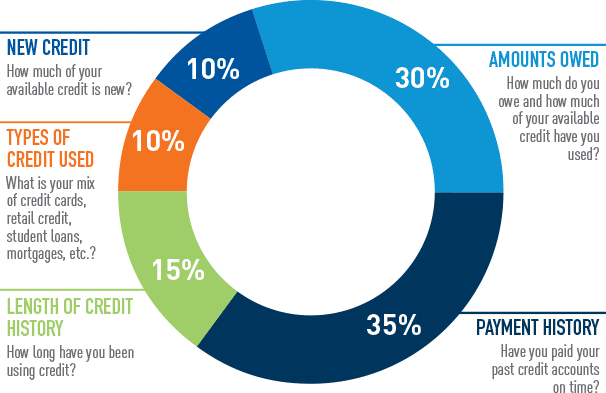

What is wrong with the Current Lending Industry?
- The Future of Lending: Using Machine Learning to Create Superior Risk-Adjusted RewardThe Set-upThe team has decided to take over the world of consumer lending. Personal loans are a $290bn industry and are disrupting the $4 trillion credit card industry. The proliferation of companies such as Lending Club and Prosper helped to supercharge growth of this industry. The Problem is that the current credit market hasn’t evolved since the 1800’s.
- Loans are accepted, rejected and priced mostly by people. Almost like insurance, when someone applies for loans from banks or credit cards, there are a handful of metrics used to gauge the risk of the consumer. As an example, if your FICO score is under 650, most banks will reject your application, regardless of the cause of the low FICO score or your assets.
- The lack of personalization implies there should be significant inefficiencies in the market. It also implies that customers are grouped together, likely resulting in several subgroups of customers overpaying and subsidizing several other subgroups.The Benjamins decided that we were tired of working for other people and would like to grab a slice of this industry. We thought that by using common sense financial metrics, we could create a machine learning model that could provide a better prediction and personalized interest rate, depending on personalized information. 3
